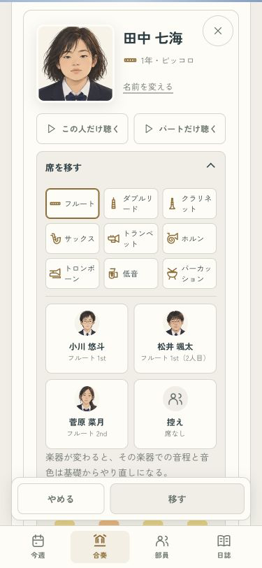
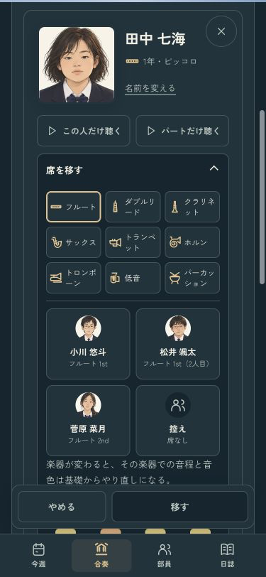
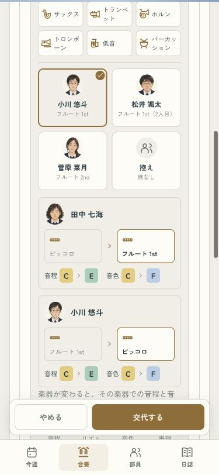
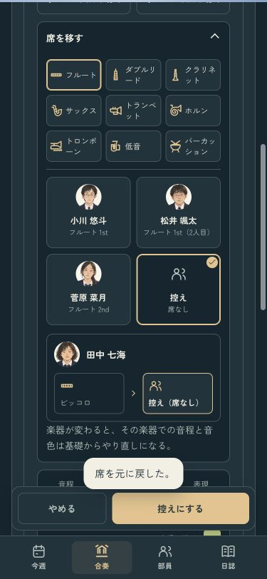
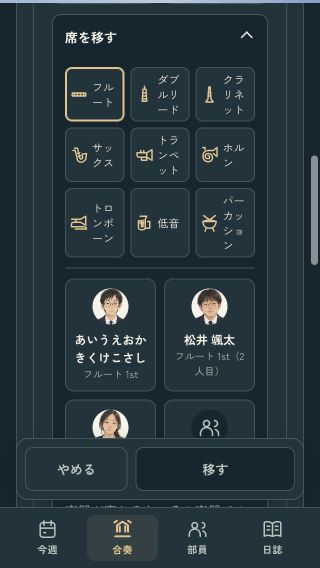

吹奏楽部のつくりかた · 席選びの改善
名前も、交代も、迷わず選ぶ。
顔の下に名前を置いて、だれを選ぶか見やすく。決定ボタンは、相手がいれば「交代する」、控えを選べば「控えにする」に変わります。
375px · ライト / 名前を1行で読める
375px · ダーク / 同じ並び
決める前に、二人の行き先を。
選んだだけでは移しません。二人の顔と行き先を見て、「交代する」で決定。取り消したいときは、移動後のカードから「元に戻す」を使えます。
交代する相手と、変わるランクを確認
控えを選ぶと「控えにする」
小さい画面や、長い名前も
320px幅で12文字の名前も省略せず、折り返して表示します。顔と選択のチェックは、名前に重ねません。

375px両テーマ、4タブ、部員一覧、小さい画面、交代・控え・空席と取り消しを確認。移動・能力変化・保存の仕組みは変更していません。iPhone用Releaseビルド成功、実機表示は未確認です。